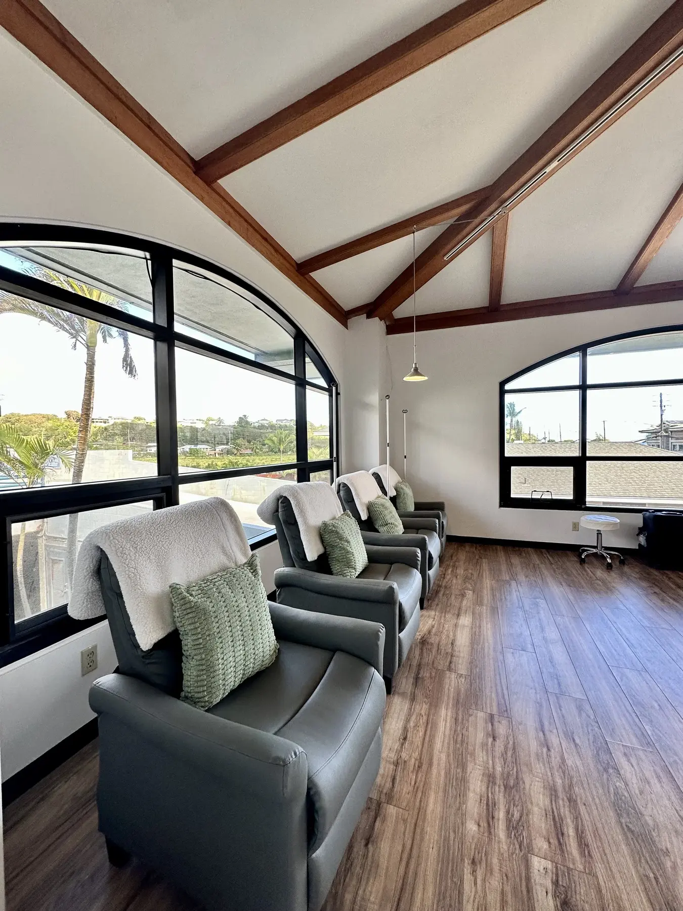
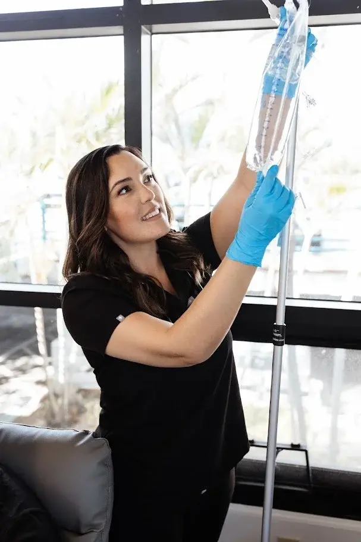

Personalized
Care shaped by your history, labs and goals

Kauaʻi Drip
Thoughtful, clinician-led support for hormones, weight management, IV therapy, skin health and longevity—designed around you.
Care shaped by your history, labs and goals
A whole-picture approach to health
Secure scheduling and intake through Jane
Locally owned and serving all of Kauaʻi
Designed around you
Kauaʻi Drip combines comprehensive lab testing with individualized care to help you better understand your body and take proactive steps toward feeling, looking and performing your best.
Not sure where to begin?
You do not need to choose a treatment on your own. Review the service families below, or open Jane to see which options begin with a consultation.

Meet Ashley
Ashley Ilustre Lizama, MSN, APRN, FNP-C, is a board-certified Family Nurse Practitioner with more than a decade of healthcare experience.
Kauaʻi Drip began in 2021 with a simple vision: bring more personalized, proactive wellness care to the Kauaʻi community. After working in direct patient care, urgent care and healthcare leadership, Ashley saw how often people knew something felt “off” but struggled to find answers.
What began with IV hydration has grown into a comprehensive health-optimization clinic where patients have time to be heard, ask questions and receive care based on the whole picture—not a single symptom or lab value.
Meet the care teamWellness, brought together
Kauaʻi Drip offers customized wellness experiences for weddings, retreats, private groups and corporate wellness programs. Available services may include IV hydration, wellness injections and other offerings tailored to your group’s needs and medical eligibility.
Please do not include medical or other sensitive information in an ordinary email.
Start with your event type, group size and preferred location.
Ask about eligible mobile services throughout Kauaʻi.
What to expect
Some services require a consultation, laboratory testing or medical clearance. Jane keeps appointment options and required intake together securely.
Explore the care categories above or browse all current appointments in Jane.
Explore servicesSelect an available time and complete any required information through Jane.
Open JaneVisit the second-floor clinic and check in at Suite 207. Free accessible parking is available via the north-end ramp.
Plan your visitKind words from our community
Selected experience-focused excerpts from reviews shared publicly on Google.
★★★★★
“Ashley was kind, extremely attentive, and I felt heard in all of my concerns.”
★★★★★
“I felt genuinely cared for and supported every step of the way.”
★★★★★
“Highly recommended Kauaʻi Drip and Ashley!”
Frequently asked questions
Care should feel personal, informed and never rushed. These answers cover a few common questions before booking.
Read all FAQsKauaʻi Drip is a personalized health-optimization clinic offering comprehensive lab testing, hormone and health optimization, medical weight management, IV therapy, wellness injections, peptide therapy, skin-health treatments, body contouring and longevity-focused care.
Kauaʻi Drip is a cash-pay practice and does not bill insurance directly.
Yes. Appointments are required and can be booked online. Some services require a consultation, laboratory testing or medical clearance before treatment.
Yes. Many wellness, IV, aesthetic, sauna and body-composition services are available to visitors, subject to medical screening and availability.
Plan your visit
The clinic is on the second floor. Check in at Suite 207.
Parking is free. For wheelchair-accessible access, park near and use the ramp at the north end of the building.
Questions before booking?
Connect with the clinic for general questions, or use Jane for appointments and private intake.
Please do not send medical or other sensitive information by ordinary email or text. Use Jane for appointments and required intake.